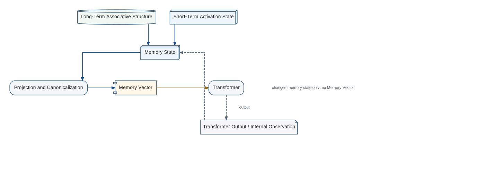

Biological memory does not behave as a precise archive. Recall is selective, reconstructive, context-dependent, and vulnerable to systematic distortion. The project generalizes this observation from human memory to biological memory in organisms with developed nervous systems, while acknowledging that direct measurement becomes increasingly difficult outside humans.
Memory Architecture

Memory State combines persistent associative structure with dynamic short-term activation. An explicit READ produces the canonical Memory Vector for the Transformer; Transformer output returns to Memory State as feedback without generating another Memory Vector.
The relevant evolutionary objective is not historical fidelity. It is successful behavior under resource constraints. A memory architecture that preserves fewer literal details but produces a more usable model can outperform an exact archive.